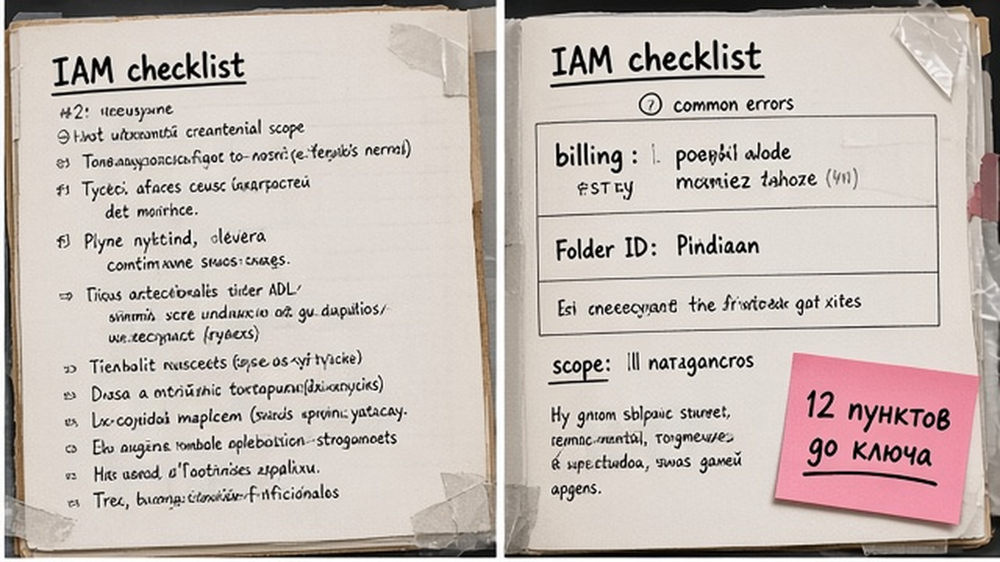
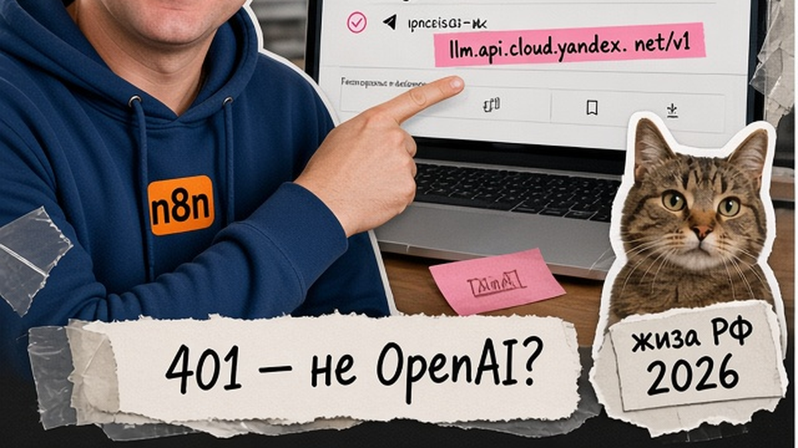
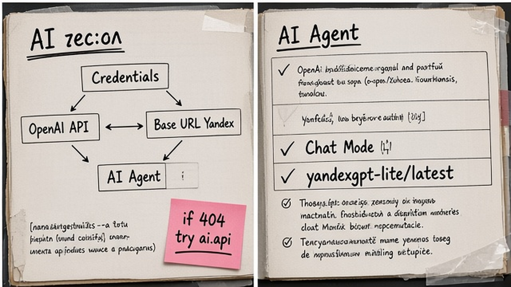

Хотите оставить заявки и черновики ответов на российской LLM, но n8n по умолчанию ждёт OpenAI? С мая 2025 Yandex Foundation Models умеют говорить на том же "языке", что и OpenAI API: вы не пишете свой HTTP-клиент, а подставляете ключ Yandex Cloud и другой Base URL в привычный credential. За один сеанс вы заведёте сервисный аккаунт, подключите YandexGPT к AI Agent и прогоните тест с human approve перед Telegram или CRM.
TL;DR / Быстрый инсайт: Подключить YandexGPT к n8n проще всего через credential "OpenAI API": API-ключ Yandex Cloud, Base URL до /v1 (обычно https://llm.api.cloud.yandex.net/v1), модель yandexgpt-lite/latest или yandexgpt/latest. Роли SA: ai.languageModels.user; scope ключа: yc.ai.languageModels.execute (запасной yc.ai.foundationModels.execute). Если 404 или пустой список моделей, попробуйте https://ai.api.cloud.yandex.net/v1 и id gpt://<folder>/yandexgpt/latest. Красный тест credential часто нормален: проверяйте реальным запуском AI Agent.
OpenAI-совместимый API здесь значит: n8n шлёт те же запросы chat/completions, что и к OpenAI, но адрес сервера другой. API (Application Programming Interface) - готовая "розетка": вы вставляете ключ и URL, workflow не переписываете. IAM - права в Yandex Cloud, кто может вызывать модели. Сервисный аккаунт (SA) - технический пользователь без пароля для автоматизации. С мая 2025 Foundation Models Yandex заявлены с такой совместимостью - поэтому в 2026 году не обязательно собирать сырой HTTP Request на каждый чат.
Ниже - чеклист IAM, настройка credential, AI Agent и сравнение трёх путей. Подробнее про агентов: автоматизация n8n; про MCP в Cursor: отдельный гайд.

Без этого блока вы потратите час на перебор Base URL. Делайте: отметьте каждый пункт до создания ключа. Не делайте: хранить secret в Telegram, Notion или в теле workflow.
Цены за токены - только в биллинге YC на дату запуска.

Credentials → OpenAI API → ключ SA → Base URL из таблицы.
| Вариант | Base URL (только до /v1) | Когда пробовать |
|---|---|---|
| A - большинство n8n-гайдов | https://llm.api.cloud.yandex.net/v1 | Первый выбор |
| B - официальный AI Studio tutorial | https://ai.api.cloud.yandex.net/v1 | 404, пустые models, ошибки маршрута |
| Симптом | Вероятная причина | Что сделать |
|---|---|---|
| 401 | Неверный или просроченный API Key | Перевыпустить ключ, обновить credential |
| 403 | Нет роли или scope | ai.languageModels.user + yc.ai.languageModels.execute |
| 404 | Неверный Base URL | Сменить llm.api на ai.api или наоборот |
| Test красный, chat работает | /models не поддержан | Доверять Execute, не Test |
Вне n8n можно проверить ключ одним POST на chat/completions - так поймёте, credential или Agent виноват.
Пример POST (curl/HTTP):
POST https://llm.api.cloud.yandex.net/v1/chat/completions
Authorization: Api-Key <ключ>
{"model":"yandexgpt-lite/latest","messages":[{"role":"user","content":"ок"}]}
Не делайте: дописывать в Base URL /chat/completions.

AI Agent зовёт Chat Model sub-node с вашим Yandex credential.
Делайте: короткий system prompt. Не делайте: гонять в prompt полные ПДн без юридической оценки.
Схема business-цепочки:
Webhook заявки → AI Agent (YandexGPT классифицирует и пишет черновик) → IF нужен человек → Telegram/Email approve → Bitrix24 или amoCRM → уведомление менеджеру
152-ФЗ: минимум полей в облаке, approve перед CRM, self-host n8n при жёстких требованиях к логам. Доступ к Yandex Cloud зависит от региона и типа аккаунта - актуальные правила в официальной документации провайдера.
| Критерий | OpenAI credential + Base URL | Community n8n-nodes-yandexgpt | HTTP Request (native FM API) |
|---|---|---|---|
| Сложность | Низкая | Средняя (install community) | Высокая |
| AI Agent + Tools | Да, рекомендуемый путь | Да, нативная нода | Вручную, частично |
| Function calling | Через OpenAI-стек | Заявлено в пакете | Сборка своими руками |
| Обновления API | Зависит от совместимости YC | Зависит от maintainer | Полный контроль |
| Когда выбирать | Default для MVP в 2026 | Нужен SA JSON и folder в UI ноды | Legacy REST llm.api.../completion |
Итоговый вердикт: Для "подключить yandexgpt к n8n" и AI Agent начните с OpenAI credential и llm.api Base URL. Community node - если хотите отдельную ноду RomanAverin на GitHub. HTTP Request - когда нужен нестандартный auth или старый endpoint foundationModels/v1/completion без OpenAI-пути.
Не делайте: выдавать community node за единственный официальный способ.
Для системной практики no-code: курс Make и вайбкодинга (credentials, approve, CRM).
Материал проверен: эксперт Елена Ковалева (Главный эксперт по SEO/GEO).
Достоверность данных: параметры IAM, Base URL и scopes сверены с документацией Yandex Cloud и материалами n8n на октябрь 2026; показы Яндекс Вордстата в текст не включались (MCP недоступен на дату research).
Нет: OpenAI credential + Base URL + AI Agent хватит для MVP. Node - опция для SA JSON в UI.
yc.ai.languageModels.execute; при 403 добавьте yc.ai.foundationModels.execute и роль ai.languageModels.user.
lite для классификации, latest для сложных ответов; billing смотрите в консоли YC.
n8n бьёт в /models; проверяйте Execute с реальным prompt.
Только после юридической оценки; минимум полей, approve, self-host при жёстких требованиях.
Разные маршруты: сначала llm.api.../v1, при 404 - ai.api.../v1 и gpt://<folder>/yandexgpt/latest.
Нода Bitrix24/amoCRM после approve; токены только в credentials.